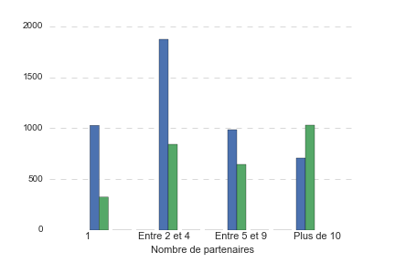
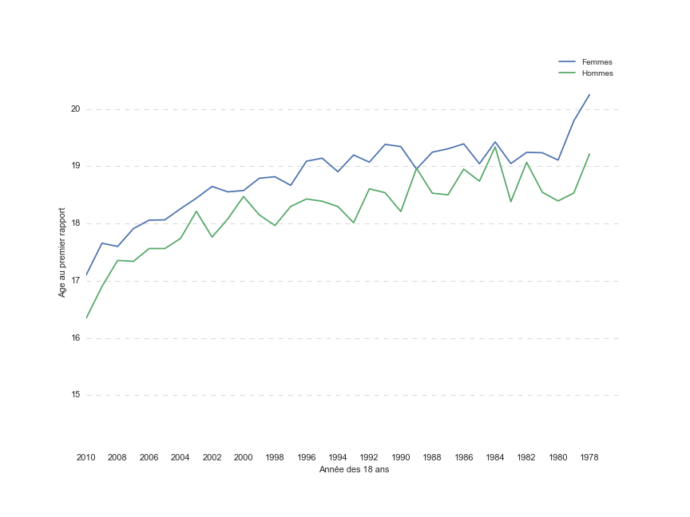

Sophie naît en 1974. Sa mère, Charlotte, a alors 21 ans. La France sort des Trente Glorieuses, et pourtant l’avortement n’est toujours pas légal : il le sera en 1975 grâce à la loi Veil.
1974 marque aussi la première accession d’une femme à un poste de secrétaire d’Etat : Françoise Giroud est nommée secrétaire d’Etat à la condition féminine. 45 ans plus tard, la parité dans le monde politique est toujours loin d’être atteinte. FIGURE. En 2014, seulement 16% des maires élu.e.s de leur commune sont des femmes. La progression a été plus forte pour la part des femmes élues au Sénat, notamment grâce à la Loi sur la Parité de 2001 qui a soumis les élections sénatoriales au principe de parité dans les départements qui élisent au moins quatre sénateurs, soit dans la moitié des départements.

Sophie grandit à une période où les femmes revendiquent de plus en plus leur indépendance au sein du ménage.
En effet, en 1970 l’autorité paternelle a été remplacée par « l’autorité parentale » : les époux assurent ensemble la direction morale et matérielle de la famille.
Il faudra attendre 1983 pour que la notion de chef de famille soit supprimée du droit fiscal et 1984 pour obtenir l’égalité des époux dans la gestion des biens de la famille et des enfants.
Malgré des évolutions positives dans la loi, de lourds préjugés subsistent quant au rôle de la femme au sein du ménage. Ainsi, en 2010, le partage des tâches domestiques reste particulièrement inégalitaire. FIGURE!
L’enfance de Sophie est aussi marquée par le développement continu de la société de consommation : comme les autres petites filles, elle a le droit à la dernière Barbie à Noël, quand Charlotte recevait une poupée et Louise aura la chance d’avoir toute une collection de polly pockets.
Aujourd’hui l’éducation des enfants reste un enjeu majeur de l’égalité hommes-femmes : les jouets des catalogues de grands magasins sont encore particulièrement genrés. FIGURE FRANÇOIS.
La naissance de Sophie se passe bien. Elle est un sacré beau bébé, pas comme Annette qui était toute vilaine.
 La naissance de Sophie se passe bien. Elle est un sacré beau bébé, pas comme Annette qui était toute vilaine.
La naissance de Sophie se passe bien. Elle est un sacré beau bébé, pas comme Annette qui était toute vilaine.
La naissance de Sophie se passe bien. Elle est un sacré beau bébé, pas comme Annette qui était toute vilaine.
Les amis sont aussi en très bonne place pour honorer la relation d'aide.
L'aidant type a 53 ans. Etre aidant n'est pas une activité genrée: il y a 53% de femmes pour 47% d'hommes engagés. Ils sont plus de 2/3 a exercé une activité professionnelle à temps complet.
At vero eos et accusamus et iusto odio dignissimos ducimus qui blanditiis praesentium voluptatum deleniti atque corrupti quos dolores et quas molestias excepturi sint occaecati cupiditate non provident, similique sunt in culpa qui officia deserunt mollitia animi, id est laborum et dolorum fuga. Et harum quidem rerum facilis est et expedita distinctio. Nam libero tempore, cum soluta nobis est eligendi optio cumque nihil impedit quo minus id quod maxime placeat facere possimus, omnis voluptas a ssumenda est, omnis dolor repellendus. Temporibus autem quibusdam et aut officiis debitis aut rerum necessitatibus saepe eveniet ut et voluptates repudiandae sint et molestiae non recusandae. Itaque earum rerum hic tenetur a sapiente delectus, ut aut reiciendis voluptatibus maiores alias consequatur aut perferendis doloribus asperiores repellat.
At vero eos et accusamus et iusto odio dignissimos ducimus qui blanditiis praesentium voluptatum deleniti atque corrupti quos dolores et quas molestias excepturi sint occaecati cupiditate non provident, similique sunt in culpa qui officia deserunt mollitia animi, id est laborum et dolorum fuga. Et harum quidem rerum facilis est et exped i ta distinctio. Nam libero tempore, cum soluta nobis est eligendi optio cumque nihil impedit quo minus id quod maxime placeat facere possimus, omnis voluptas a ssumenda est, omnis dolor repellendus. Temporibus autem quibusdam et aut officiis debitis aut rerum necessitatibus saepe eveniet ut et voluptates repudiandae sint et molestiae non recusandae. Itaque earum rerum hic tenetur a sapiente delectus, ut aut reiciendis voluptatibus maiores alias consequatur aut perferendis doloribus asperiores repellat.
At vero eos et accusamus et iusto odio dignissimos ducimus qui blanditiis praesentium voluptatum deleniti atque corrupti quos dolores et quas molestias excepturi sint occaecati cupiditate non provident, similique sunt in culpa qui officia deserunt mollitia animi, id est laborum et dolorum fuga. Et harum quidem rerum facilis est et expedi ta distinctio. Nam libero tempore, cum soluta nobis est eligendi optio cumque nihil impedit quo minus id quod maxime placeat facere possimus, omnis voluptas assumenda est, omnis dolor repellendus. Temporibus autem quibusdam et aut officiis debitis aut rerum necessitatibus saepe eveniet ut et voluptates repudiandae sint et molestiae non recusandae. Itaque earum rerum hic tenetur a sapiente delectus, ut aut reiciendis voluptatibus maiores alias consequatur aut perferendis doloribus asperiores repellat.
At vero eos et accusamus et iusto odio dignissimos ducimus qui blanditiis praesentium voluptatum deleniti atque corrupti quos dolores et quas molestias excepturi sint occaecati cupiditate non provident, similique sunt in culpa qui officia deserunt mollitia animi, id est laborum et dolorum fuga. Et harum quidem rerum facilis est et expedi ta distinctio. Nam libero tempore, cum soluta nobis est eligendi optio cumque nihil impedit quo minus id quod maxime placeat facere possimus, omnis voluptas assumenda est, omnis dolor repellendus. Temporibus autem quibusdam et aut officiis debitis aut rerum necessitatibus saepe eveniet ut et voluptates repudiandae sint et molestiae non recusandae. Itaque earum rerum hic tenetur a sapiente delectus, ut aut reiciendis voluptatibus maiores alias consequatur aut perferendis doloribus asperiores repellat.
At vero eos et accusamus et iusto odio dignissimos ducimus qui blanditiis praesentium voluptatum deleniti atque corrupti quos dolores et quas molestias excepturi sint occaecati cupiditate non provident, similique sunt in culpa qui officia deserunt mollitia animi, id est laborum et dolorum fuga. Et harum quidem rerum facilis est et expedi ta distinctio. Nam libero tempore, cum soluta nobis est eligendi optio cumque nihil impedit quo minus id quod maxime placeat facere possimus, omnis voluptas assumenda est, omnis dolor repellendus. Temporibus autem quibusdam et aut officiis debitis aut rerum necessitatibus saepe eveniet ut et voluptates repudiandae sint et molestiae non recusandae. Itaque earum rerum hic tenetur a sapiente delectus, ut aut reiciendis voluptatibus maiores alias consequatur aut perferendis doloribus asperiores repellat.
At vero eos et accusamus et iusto odio dignissimos ducimus qui blanditiis praesentium voluptatum deleniti atque corrupti quos dolores et quas molestias excepturi sint occaecati cupiditate non provident, similique sunt in culpa qui officia deserunt mollitia animi, id est laborum et dolorum fuga. Et harum quidem rerum facilis est et expedi ta distinctio. Nam libero tempore, cum soluta nobis est eligendi optio cumque nihil impedit quo minus id quod maxime placeat facere possimus, omnis voluptas assumenda est, omnis dolor repellendus. Temporibus autem quibusdam et aut officiis debitis aut rerum necessitatibus saepe eveniet ut et voluptates repudiandae sint et molestiae non recusandae. Itaque earum rerum hic tenetur a sapiente delectus, ut aut reiciendis voluptatibus maiores alias consequatur aut perferendis doloribus asperiores repellat.
At vero eos et accusamus et iusto odio dignissimos ducimus qui blanditiis praesentium voluptatum deleniti atque corrupti quos dolores et quas molestias excepturi sint occaecati cupiditate non provident, similique sunt in culpa qui officia deserunt mollitia animi, id est laborum et dolorum fuga. Et harum quidem rerum facilis est et expedi ta distinctio. Nam libero tempore, cum soluta nobis est eligendi optio cumque nihil impedit quo minus id quod maxime placeat facere possimus, omnis voluptas assumenda est, omnis dolor repellendus. Temporibus autem quibusdam et aut officiis debitis aut rerum necessitatibus saepe eveniet ut et voluptates repudiandae sint et molestiae non recusandae. Itaque earum rerum hic tenetur a sapiente delectus, ut aut reiciendis voluptatibus maiores alias consequatur aut perferendis doloribus asperiores repellat.
At vero eos et accusamus et iusto odio dignissimos ducimus qui blanditiis praesentium voluptatum deleniti atque corrupti quos dolores et quas molestias excepturi sint occaecati cupiditate non provident, similique sunt in culpa qui officia deserunt mollitia animi, id est laborum et dolorum fuga. Et harum quidem rerum facilis est et expedi ta distinctio. Nam libero tempore, cum soluta nobis est eligendi optio cumque nihil impedit quo minus id quod maxime placeat facere possimus, omnis voluptas assumenda est, omnis dolor repellendus. Temporibus autem quibusdam et aut officiis debitis aut rerum necessitatibus saepe eveniet ut et voluptates repudiandae sint et molestiae non recusandae. Itaque earum rerum hic tenetur a sapiente delectus, ut aut reiciendis voluptatibus maiores alias consequatur aut perferendis doloribus asperiores repellat.
Sources
- SHARE vague 6 2015 (http://www.share-project.org/)
- World Population Prospects 2017, ONU (https://esa.un.org/unpd/wpp)
Qui sommes nous? Nous sommes cinq étudiants en dernière année à l'ENSAE ParisTech. Nous avons réalisé ce projet dans le cadre d'un cours de Dataviz.
- Francis Devrainne


- Coline Bouvart
- AK de Sainte-Foy
- Armand de Gélis
- Amélie Staquet